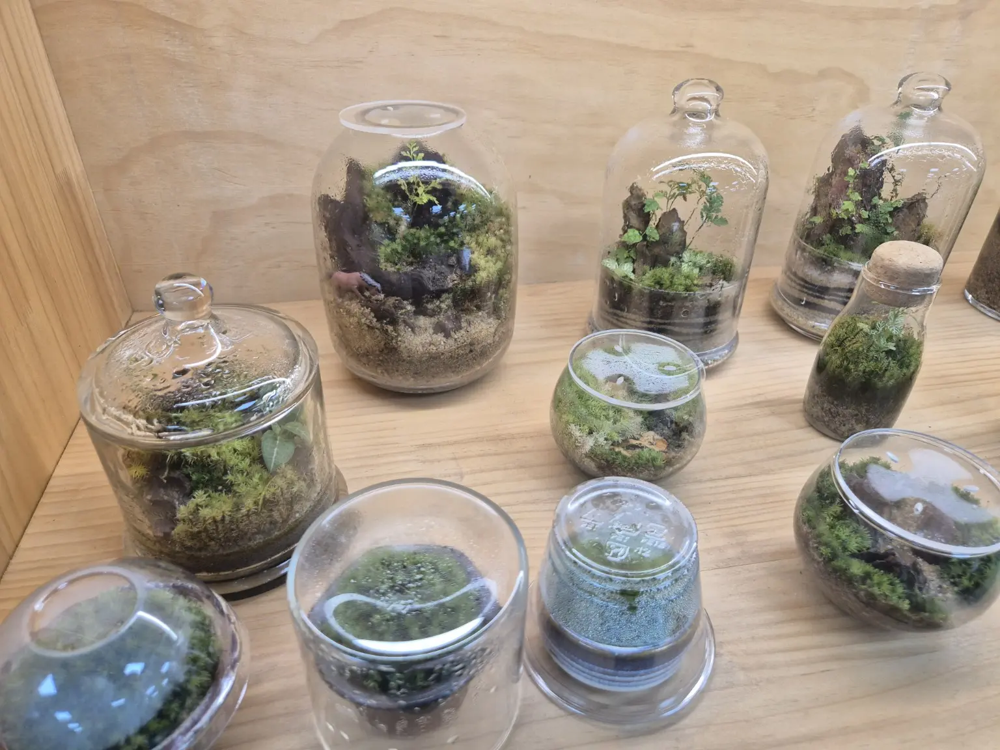
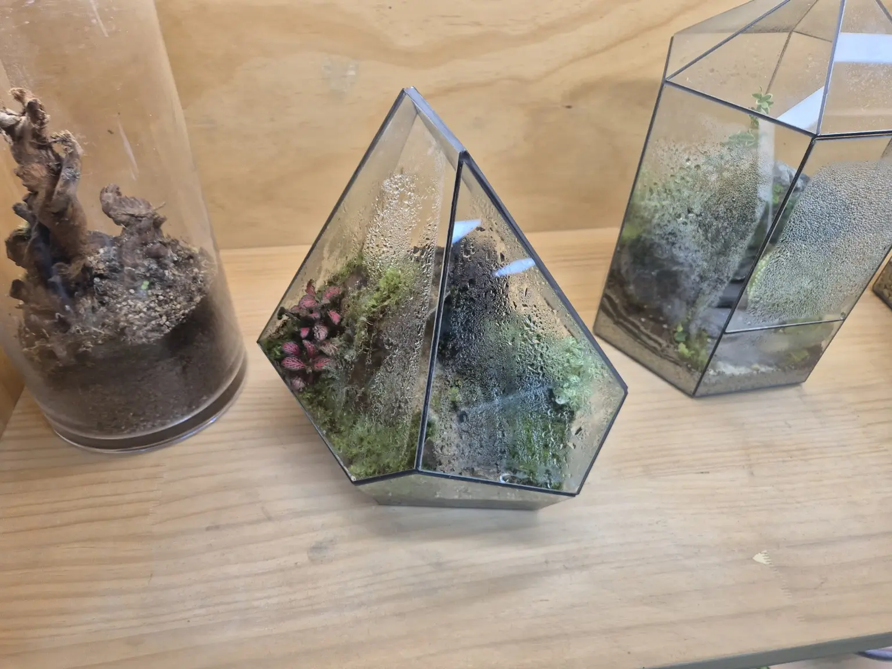

PORTFOLIO · CONCEPT SELECTION
마음에 드는 분위기부터 고르세요.
비슷한 느낌으로 문의하거나, 원하는 콘셉트를 골라 상담할 수 있습니다.

조형적인 유리 용기
이 느낌으로 문의
다양한 용기 구성
이 느낌으로 문의PORTFOLIO 04사진 준비 중
대형 공간 인테리어
이런 용도로 문의PORTFOLIO 05사진 준비 중
선물과 기념일
이런 용도로 문의PORTFOLIO 06사진 준비 중
기업·기관 공간
이런 용도로 문의현재 사진은 기존 샘플 자료입니다. 위 이미지는 납품·주문제작 완료 실적이 아니며, 실제 작품 포트폴리오는 사진 확보 후 순차적으로 교체합니다.
MADE TO SUIT YOUR SPACE
한 사람의 취향부터
하나의 공간까지.
공간 인테리어
집·사무실·상업공간에 어울리는 분위기를 상담합니다.
특별한 선물
전하고 싶은 마음과 용도에 맞는 구성을 함께 생각합니다.
기업·기관 주문
수량과 설치 목적에 따른 제작 가능 여부를 검토합니다.
제작 가격·기간·완성품 전달 방식은 작품 크기, 식물 및 재료 구성 등을 확인한 후 개별 안내합니다.
YOUR PERSONAL TERRARIUM
당신이 원하는
작은 숲을 알려주세요.
마음에 드는 작품을 고르거나 전문가 추천을 선택하세요. 예산과 크기를 아직 몰라도 괜찮습니다.
현재는 주문제작 준비 단계입니다. 문의 접수가 제작 확정이나 결제를 의미하지 않습니다.
taejang2025@naver.com제작 의뢰 상담
작품과 몇 가지 조건만 선택하세요. 글로 길게 설명하지 않아도 됩니다.